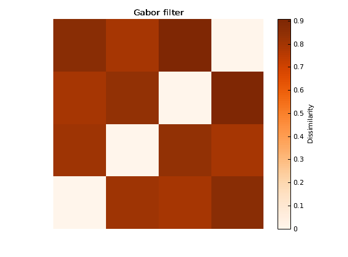
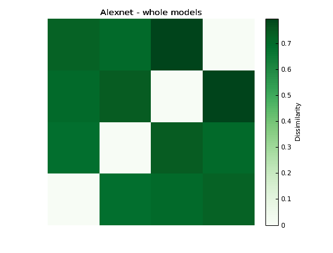
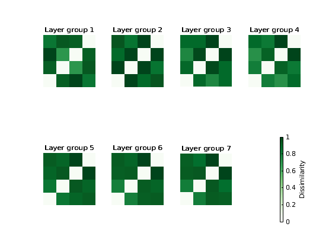
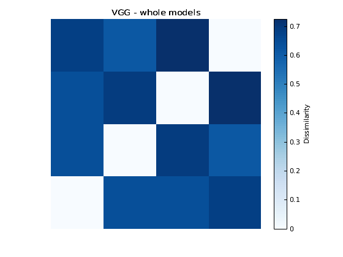
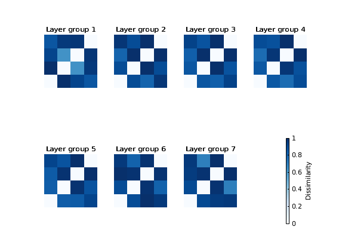
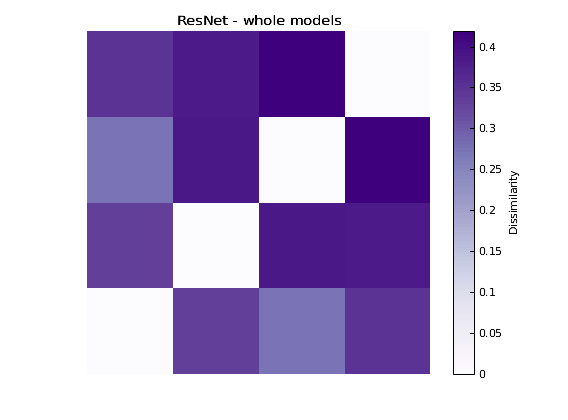
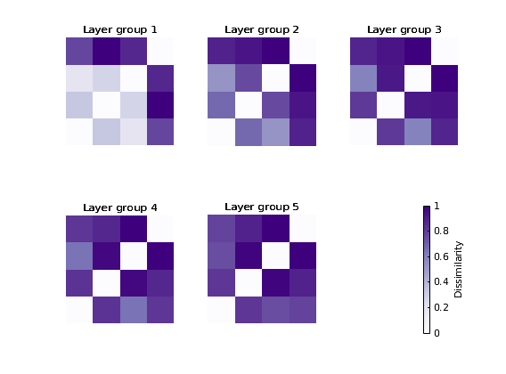

Plot visual computational model RDMs
This script plots the RDMs of visual computational models used in the study "Visual category representation in the infant brain"
Contents
Initialize
% Clean command window, workspace and figure windows clc; clear; close all;
Download dataset (if necessary) and add VCR_infant to the MATLAB path
setup(13);
Downloading visualmodels.mat (please be patient). Downloading is done!
Load RDMs
load('visualmodels.mat');
Plot Gabor filter model
f1 = figure(1); imagesc(squeeze(modelRDMs(1).RDM(1,:,:))); axis equal; axis tight; axis xy; axis off; colormap(oranges); title('Gabor filter'); CBar_Handle = colorbar('EastOutside'); set(CBar_Handle,'FontSize', 8,'Linewidth', 0.5, 'FontName', 'Arial','Color', 'black'); set(get(CBar_Handle, 'YLabel'), 'String', "Dissimilarity", ... 'FontSize', 8, 'FontName', 'Arial','Color', 'Black'); set(gcf,'Renderer','painters');
Plot Alexnet
f2 = figure(2); imagesc(squeeze(mean(modelRDMs(2).RDM(:,:,:),1))); axis equal; axis tight; axis xy; axis off; colormap(greens); title('Alexnet - whole models'); CBar_Handle = colorbar('EastOutside'); set(CBar_Handle,'FontSize', 8,'Linewidth', 0.5, 'FontName', 'Arial','Color', 'black'); set(get(CBar_Handle, 'YLabel'), 'String', "Dissimilarity", ... 'FontSize', 8, 'FontName', 'Arial','Color', 'Black'); set(gcf,'Renderer','painters'); f3 = figure(3); hold on; for n = 1:8 if n ==8 subplot(2,4,n) CBar_Handle = colorbar('EastOutside'); set(CBar_Handle,'FontSize', 8,'Linewidth', 0.5, 'FontName', 'Arial','Color', 'black'); set(get(CBar_Handle, 'YLabel'), 'String', "Dissimilarity", ... 'FontSize', 8, 'FontName', 'Arial','Color', 'Black'); axis off else subplot(2,4,n) imagesc(squeeze(modelRDMs(2).RDM(n,:,:))); axis equal; axis tight; axis xy; axis off; colormap(greens); title(['Layer group ',num2str(n)]) end end set(gcf,'Renderer','painters'); 
Plot VGG
f4 = figure(4); imagesc(squeeze(mean(modelRDMs(3).RDM(:,:,:),1))); axis equal; axis tight; axis xy; axis off; colormap(blues); title('VGG - whole models'); CBar_Handle = colorbar('EastOutside'); set(CBar_Handle,'FontSize', 8,'Linewidth', 0.5, 'FontName', 'Arial','Color', 'black'); set(get(CBar_Handle, 'YLabel'), 'String', "Dissimilarity", ... 'FontSize', 8, 'FontName', 'Arial','Color', 'Black'); set(gcf,'Renderer','painters'); f5 = figure(5); hold on; for n = 1:8 if n ==8 subplot(2,4,n) CBar_Handle = colorbar('EastOutside'); set(CBar_Handle,'FontSize', 8,'Linewidth', 0.5, 'FontName', 'Arial','Color', 'black'); set(get(CBar_Handle, 'YLabel'), 'String', "Dissimilarity", ... 'FontSize', 8, 'FontName', 'Arial','Color', 'Black'); axis off else subplot(2,4,n) imagesc(squeeze(modelRDMs(3).RDM(n,:,:))); axis equal; axis tight; axis xy; axis off; colormap(blues); title(['Layer group ',num2str(n)]) end end set(gcf,'Renderer','painters'); 
Plot ResNet
f6 = figure(6); imagesc(squeeze(mean(modelRDMs(4).RDM(:,:,:),1))); axis equal; axis tight; axis xy; axis off; colormap(purples); title('ResNet - whole models'); CBar_Handle = colorbar('EastOutside'); set(CBar_Handle,'FontSize', 8,'Linewidth', 0.5, 'FontName', 'Arial','Color', 'black'); set(get(CBar_Handle, 'YLabel'), 'String', "Dissimilarity", ... 'FontSize', 8, 'FontName', 'Arial','Color', 'Black'); set(gcf,'Renderer','painters'); f7 = figure(7); hold on; for n = 1:6 if n ==6 subplot(2,3,n) CBar_Handle = colorbar('EastOutside'); set(CBar_Handle,'FontSize', 8,'Linewidth', 0.5, 'FontName', 'Arial','Color', 'black'); set(get(CBar_Handle, 'YLabel'), 'String', "Dissimilarity", ... 'FontSize', 8, 'FontName', 'Arial','Color', 'Black'); axis off else subplot(2,3,n) imagesc(squeeze(modelRDMs(4).RDM(n,:,:))); axis equal; axis tight; axis xy; axis off; colormap(purples); title(['Layer group ',num2str(n)]) end end set(gcf,'Renderer','painters'); 